Realização e apoios
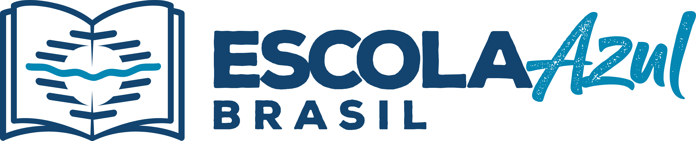
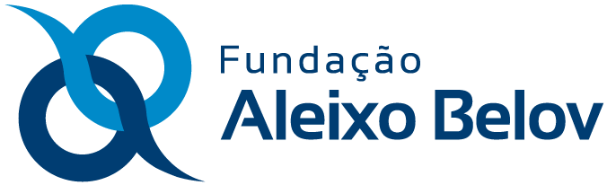
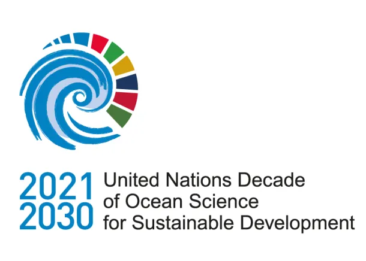

0 M · Zona de luz
Cultura Oceânica na educação básica
O Imersão Azul reúne 11 livros didáticos, vídeos em 360°, lições e fichas de atividades num portal gratuito, para que professores e estudantes de qualquer escola do Brasil descubram como o oceano está ligado à chuva, aos rios, à comida e à vida de cada um.
O Imersão Azul já está chegando às salas de aula.
0 M · O projeto
Promover a Cultura Oceânica é compreender a influência do oceano sobre a nossa vida e a influência das nossas escolhas sobre o oceano.
O oceano regula o clima, alimenta o ciclo da água, sustenta a biodiversidade e movimenta a economia. Mesmo assim, essas relações quase não aparecem no dia a dia da escola, principalmente longe do litoral. O Imersão Azul aproxima esse conhecimento do que o estudante já vive: a chuva, os rios, os resíduos, o consumo e as transformações do lugar onde mora.
Uma coleção de 11 livros com revisão científica, pedagógica e textual, organizada por etapa de ensino.
Lições e fichas que reduzem o tempo de preparação e cabem no planejamento que a escola já tem.
Públicas e privadas, urbanas e rurais, do litoral e do interior, com ou sem internet contínua.
Oficinas e um hackathon escolar para a turma criar respostas para desafios da água e do oceano.
200 M · Penumbra
Você faz o cadastro uma vez e encontra tudo organizado por tema e etapa de ensino. Os materiais novos entram no portal assim que ficam prontos.
11 livros, do 1º ano do Fundamental à 3ª série do Médio, mais a proposta pedagógica.
Mergulhos em ambientes marinhos com perguntas de observação e contexto científico.
Sequências didáticas com objetivo, atividade, registro, avaliação e conexão local.
Fichas do professor e do estudante, para usar no digital ou imprimir na escola.
Do mapa do caminho da água à maquete de manguezal, com materiais simples.
A turma aprende a montar os próprios óculos para assistir aos vídeos 360°.
Roteiro completo para um desafio anual de soluções, sem precisar de programação.
Aulas gravadas para aplicar o programa com autonomia, sem saber Oceanografia.
O acesso é gratuito. Professores, estudantes e gestores fazem um cadastro rápido, em 4 passos, e entram na hora.
Criar meu acesso →200 M · Como funciona
A escola não precisa trabalhar todos os livros ao mesmo tempo. Ela escolhe uma trilha e avança no próprio ritmo.
A escola indica as turmas, os professores, as etapas e os recursos que tem.
Os educadores aprendem a usar o portal, escolher os conteúdos e conduzir as atividades.
Definição das trilhas, do calendário, das atividades e da forma de avaliar.
Os professores aplicam as lições e escolhem vídeos, oficinas e o hackathon.
Registro dos resultados, ajustes e planejamento do ciclo seguinte.
Para começar, o percurso simplificado tem quatro lições temáticas e uma produção final dos estudantes. A escola pode distribuir esse percurso ao longo do semestre ou ampliá-lo com oficinas, a montagem dos óculos cardboard e o hackathon.
500 M · A coleção
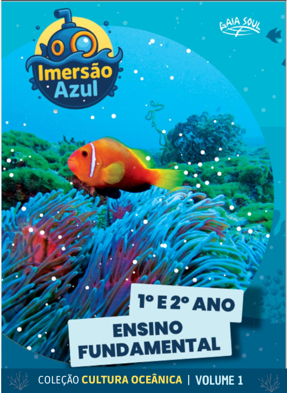
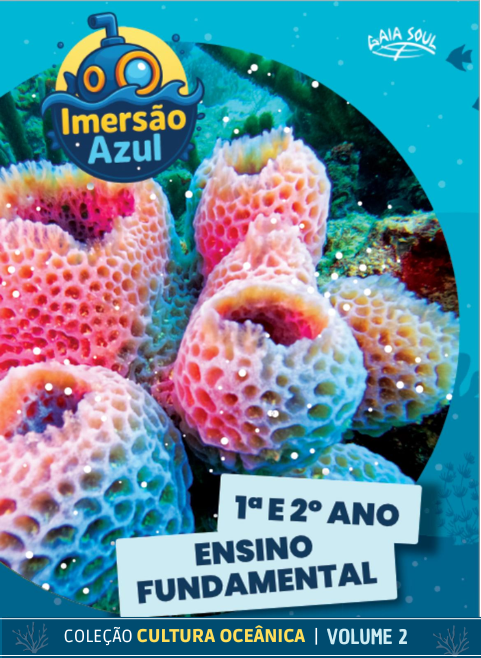
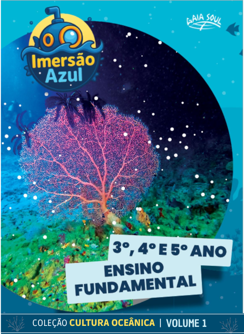
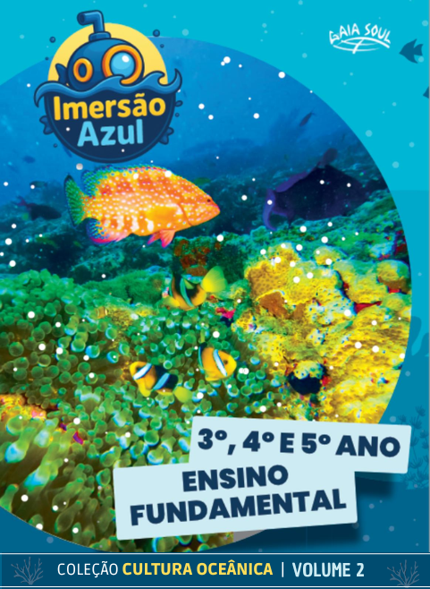
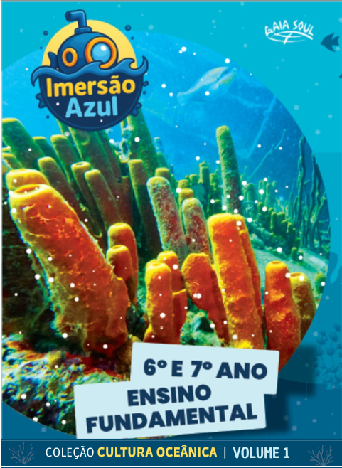
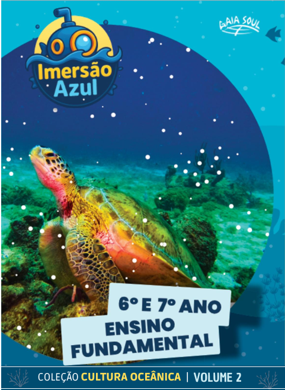
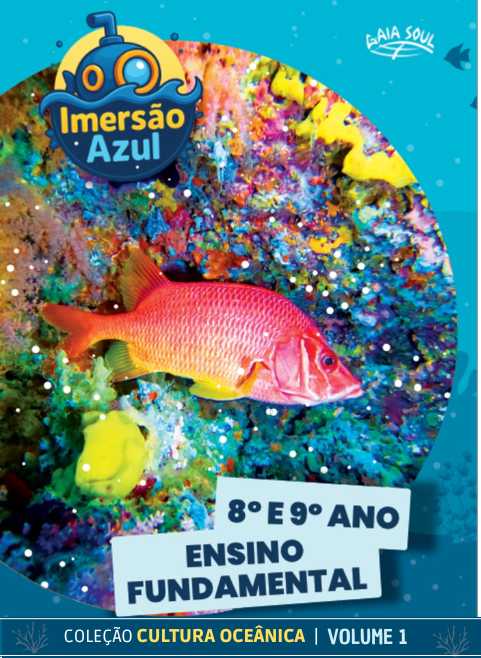
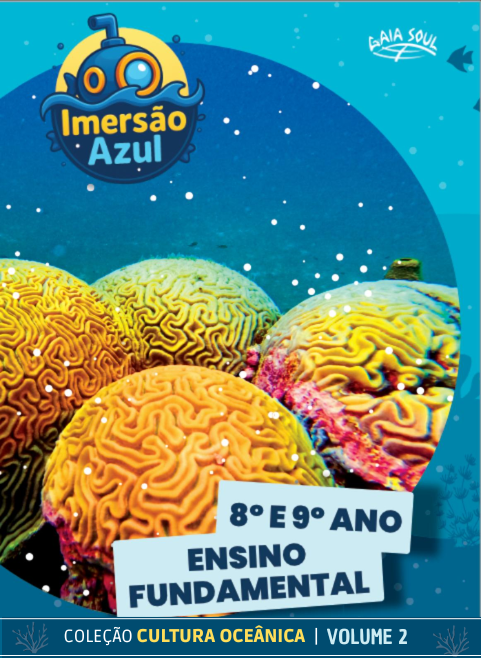
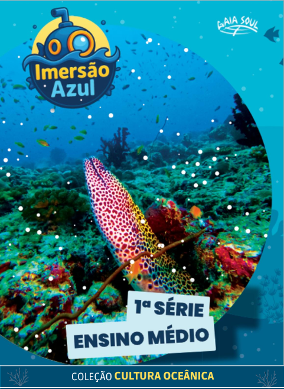
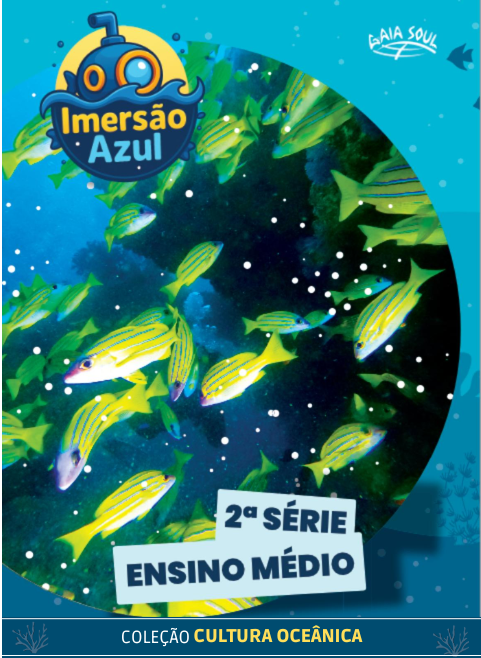
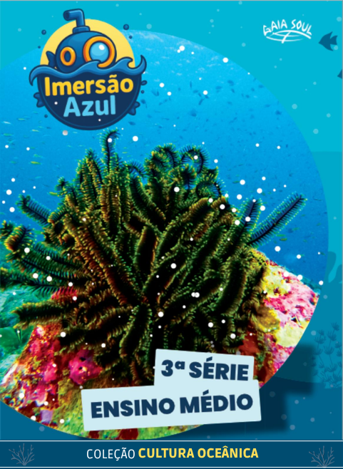
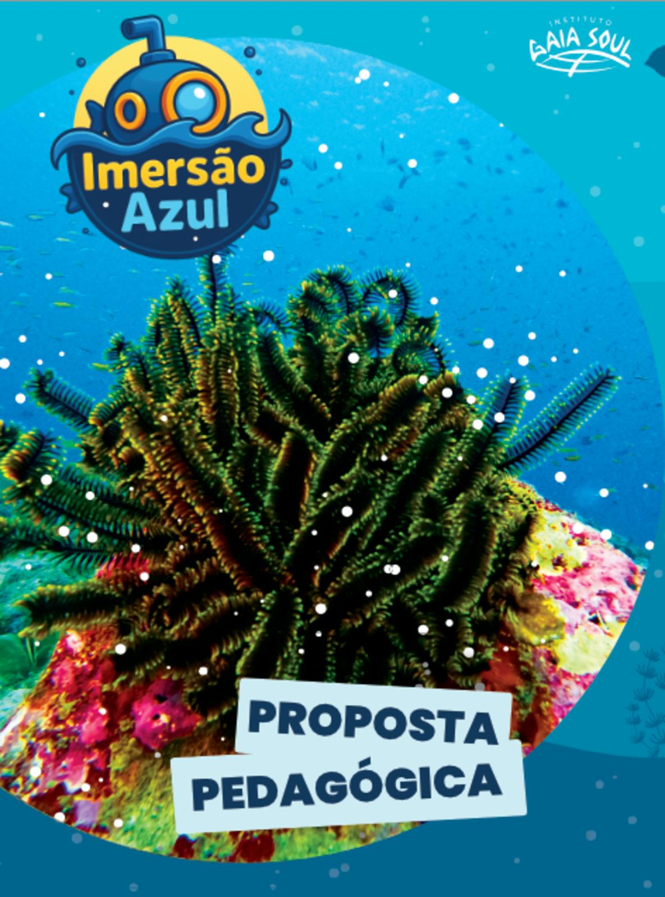
Os livros são a base do programa e a referência para o planejamento do professor. Cada um está ligado às lições, aos vídeos e às atividades do mesmo tema, e todos ficam no portal para leitura digital.
Ler a coleção no portal →1000 M · Zona profunda
A turma inteira explora o vídeo 360° junta, com a mediação do professor.
Cada grupo arrasta a tela ou gira o aparelho para olhar em todas as direções.
Com um celular compatível, a experiência fica imersiva de verdade.
Imagens e fichas impressas preservam os objetivos de cada lição.
1000 M · Para escolas e redes de ensino
Cada escola indica um ponto focal: um professor ou coordenador que organiza o planejamento e articula os docentes envolvidos. Quer levar o Imersão Azul para a sua escola ou rede?
Falar com a equipe →1000 M · Para empresas e apoiadores
A criação dos recursos concentra a maior parte do investimento. Depois de prontos, eles podem ser usados por muitas escolas. Por isso, cada parceria multiplica o alcance do programa: mais acesso, mais acompanhamento e mais estudantes aprendendo sobre o oceano.
Em breve, nesta área: a aplicação dos recursos e o andamento do projeto, com os números de uso do portal.
Período de acesso ao portal, formação e suporte para as escolas escolhidas.
Escolas participantes, professores formados, lições aplicadas e aprendizagem antes e depois da trilha.
Uma iniciativa de educação alinhada à Década das Nações Unidas da Ciência Oceânica (2021-2030).
Realização e apoios



1000 M · O próximo mergulho
Crie o seu acesso gratuito e leve hoje mesmo a Coleção Imersão Azul para a sua turma.